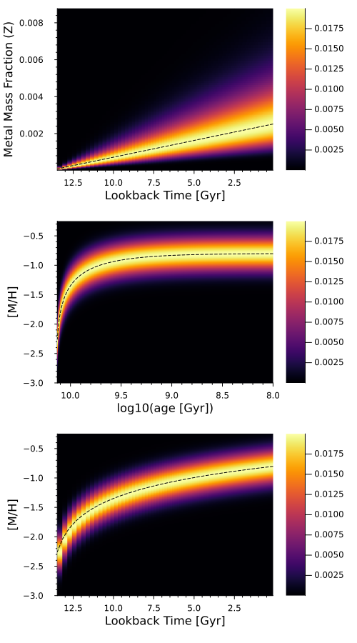

<!DOCTYPE html>
<html lang="en"><head><meta charset="UTF-8"/><meta name="viewport" content="width=device-width, initial-scale=1.0"/><title>Logarithmic Age-Metallicity Relation · StarFormationHistories.jl</title><meta name="title" content="Logarithmic Age-Metallicity Relation · StarFormationHistories.jl"/><meta property="og:title" content="Logarithmic Age-Metallicity Relation · StarFormationHistories.jl"/><meta property="twitter:title" content="Logarithmic Age-Metallicity Relation · StarFormationHistories.jl"/><meta name="description" content="Documentation for StarFormationHistories.jl."/><meta property="og:description" content="Documentation for StarFormationHistories.jl."/><meta property="twitter:description" content="Documentation for StarFormationHistories.jl."/><script data-outdated-warner src="../../assets/warner.js"></script><link href="https://cdnjs.cloudflare.com/ajax/libs/lato-font/3.0.0/css/lato-font.min.css" rel="stylesheet" type="text/css"/><link href="https://cdnjs.cloudflare.com/ajax/libs/juliamono/0.050/juliamono.min.css" rel="stylesheet" type="text/css"/><link href="https://cdnjs.cloudflare.com/ajax/libs/font-awesome/6.4.2/css/fontawesome.min.css" rel="stylesheet" type="text/css"/><link href="https://cdnjs.cloudflare.com/ajax/libs/font-awesome/6.4.2/css/solid.min.css" rel="stylesheet" type="text/css"/><link href="https://cdnjs.cloudflare.com/ajax/libs/font-awesome/6.4.2/css/brands.min.css" rel="stylesheet" type="text/css"/><link href="https://cdnjs.cloudflare.com/ajax/libs/KaTeX/0.16.8/katex.min.css" rel="stylesheet" type="text/css"/><script>documenterBaseURL="../.."</script><script src="https://cdnjs.cloudflare.com/ajax/libs/require.js/2.3.6/require.min.js" data-main="../../assets/documenter.js"></script><script src="../../search_index.js"></script><script src="../../siteinfo.js"></script><script src="../../../versions.js"></script><link class="docs-theme-link" rel="stylesheet" type="text/css" href="../../assets/themes/catppuccin-mocha.css" data-theme-name="catppuccin-mocha"/><link class="docs-theme-link" rel="stylesheet" type="text/css" href="../../assets/themes/catppuccin-macchiato.css" data-theme-name="catppuccin-macchiato"/><link class="docs-theme-link" rel="stylesheet" type="text/css" href="../../assets/themes/catppuccin-frappe.css" data-theme-name="catppuccin-frappe"/><link class="docs-theme-link" rel="stylesheet" type="text/css" href="../../assets/themes/catppuccin-latte.css" data-theme-name="catppuccin-latte"/><link class="docs-theme-link" rel="stylesheet" type="text/css" href="../../assets/themes/documenter-dark.css" data-theme-name="documenter-dark" data-theme-primary-dark/><link class="docs-theme-link" rel="stylesheet" type="text/css" href="../../assets/themes/documenter-light.css" data-theme-name="documenter-light" data-theme-primary/><script src="../../assets/themeswap.js"></script></head><body><div id="documenter"><nav class="docs-sidebar"><div class="docs-package-name"><span class="docs-autofit"><a href="../../">StarFormationHistories.jl</a></span></div><button class="docs-search-query input is-rounded is-small is-clickable my-2 mx-auto py-1 px-2" id="documenter-search-query">Search docs (Ctrl + /)</button><ul class="docs-menu"><li><a class="tocitem" href="../../">Overview</a></li><li><span class="tocitem">Deriving Star Formation Histories from Hess Diagrams</span><ul><li><a class="tocitem" href="../fitting_intro/">Background and Template Construction</a></li><li><a class="tocitem" href="../unconstrained/">High-Level Methods for Unconstrained Fitting</a></li><li><input class="collapse-toggle" id="menuitem-2-3" type="checkbox" checked/><label class="tocitem" for="menuitem-2-3"><span class="docs-label">Constrained Metallicity Evolution</span><i class="docs-chevron"></i></label><ul class="collapsed"><li><a class="tocitem" href="../linear_amr/">Linear Age-Metallicity Relation</a></li><li class="is-active"><a class="tocitem" href>Logarithmic Age-Metallicity Relation</a><ul class="internal"><li><a class="tocitem" href="#Definition"><span>Definition</span></a></li><li><a class="tocitem" href="#Fitting-Functions"><span>Fitting Functions</span></a></li><li><a class="tocitem" href="#Sampling-Functions"><span>Sampling Functions</span></a></li><li><a class="tocitem" href="#Fixed-Logarithmic-Age-Metallicity-Relation"><span>Fixed Logarithmic Age-Metallicity Relation</span></a></li><li><a class="tocitem" href="#Implementation"><span>Implementation</span></a></li></ul></li><li><a class="tocitem" href="../fixed_amr/">Fixed Age-Metallicity Relations</a></li></ul></li><li><input class="collapse-toggle" id="menuitem-2-4" type="checkbox"/><label class="tocitem" for="menuitem-2-4"><span class="docs-label">Internals</span><i class="docs-chevron"></i></label><ul class="collapsed"><li><a class="tocitem" href="../internals/">Low-Level Functions</a></li><li><a class="tocitem" href="../kernels/">Kernels</a></li></ul></li></ul></li><li><a class="tocitem" href="../../examples/">Examples</a></li><li><a class="tocitem" href="../../simulate/">Simulating Color-Magnitude Diagrams</a></li><li><a class="tocitem" href="../../binaries/">Binary Systems</a></li><li><a class="tocitem" href="../../helpers/">Helper Functions</a></li><li><a class="tocitem" href="../../doc_index/">Index</a></li></ul><div class="docs-version-selector field has-addons"><div class="control"><span class="docs-label button is-static is-size-7">Version</span></div><div class="docs-selector control is-expanded"><div class="select is-fullwidth is-size-7"><select id="documenter-version-selector"></select></div></div></div></nav><div class="docs-main"><header class="docs-navbar"><a class="docs-sidebar-button docs-navbar-link fa-solid fa-bars is-hidden-desktop" id="documenter-sidebar-button" href="#"></a><nav class="breadcrumb"><ul class="is-hidden-mobile"><li><a class="is-disabled">Deriving Star Formation Histories from Hess Diagrams</a></li><li><a class="is-disabled">Constrained Metallicity Evolution</a></li><li class="is-active"><a href>Logarithmic Age-Metallicity Relation</a></li></ul><ul class="is-hidden-tablet"><li class="is-active"><a href>Logarithmic Age-Metallicity Relation</a></li></ul></nav><div class="docs-right"><a class="docs-navbar-link" href="https://github.com/cgarling/StarFormationHistories.jl" title="View the repository on GitHub"><span class="docs-icon fa-brands"></span><span class="docs-label is-hidden-touch">GitHub</span></a><a class="docs-navbar-link" href="https://github.com/cgarling/StarFormationHistories.jl/blob/main/docs/src/fitting/log_amr.md" title="Edit source on GitHub"><span class="docs-icon fa-solid"></span></a><a class="docs-settings-button docs-navbar-link fa-solid fa-gear" id="documenter-settings-button" href="#" title="Settings"></a><a class="docs-article-toggle-button fa-solid fa-chevron-up" id="documenter-article-toggle-button" href="javascript:;" title="Collapse all docstrings"></a></div></header><article class="content" id="documenter-page"><h1 id="Logarithmic-Age-Metallicity-Relation"><a class="docs-heading-anchor" href="#Logarithmic-Age-Metallicity-Relation">Logarithmic Age-Metallicity Relation</a><a id="Logarithmic-Age-Metallicity-Relation-1"></a><a class="docs-heading-anchor-permalink" href="#Logarithmic-Age-Metallicity-Relation" title="Permalink"></a></h1><h2 id="Definition"><a class="docs-heading-anchor" href="#Definition">Definition</a><a id="Definition-1"></a><a class="docs-heading-anchor-permalink" href="#Definition" title="Permalink"></a></h2><p>This model differs from the <a href="../linear_amr/#linear_amr_section">linear age-metallicity relation (AMR)</a> in its definition of the mean metallicity at lookback time <span>$t$</span>. In the linear model, we defined the mean metallicity as <span>$\langle [\text{M}/\text{H}] \rangle (t) = \alpha \, \left( T_\text{max} - t_j \right) + \beta$</span>, whereas in this model we define the <em>metal mass fraction</em> <span>$Z$</span> to be linear with lookback time, such that [M/H] scales logarithmically with lookback time,</p><p class="math-container">\[\begin{aligned}
\langle Z \rangle (t) &amp;= \alpha \, \left( T_\text{max} - t \right) + \beta \\
\langle [\text{M}/\text{H}]\rangle (t) &amp;\equiv \text{log} \left( \frac{\langle Z \rangle \left(t\right)}{X} \right) - \text{log} \left( \frac{Z_\odot}{X_\odot} \right)
\end{aligned}\]</p><p>with <span>$T_\text{max}$</span> being the earliest lookback time under consideration, such that <span>$\langle Z \rangle (T_\text{max}) = \beta$</span>. We choose this parameterization so that positive <span>$\alpha$</span> and <span>$\beta$</span> result in an age-metallicity relation that is monotonically increasing with decreasing lookback time <span>$t$</span>. We model the spread in metallicities at fixed <span>$t$</span> as Gaussian in [M/H], identically to how it is modelled in the linear AMR case. This implies the spread is asymmetric in <span>$Z$</span>; this can be seen in the output of <code>examples/log_amr/log_amr_example.jl</code>, shown below, which illustrates the relative weights due to a logarithmic AMR across a grid of ages and metallicities. The per-model coefficients implied by a such a logarithmic AMR can be calculated with <a href="#StarFormationHistories.calculate_coeffs_logamr"><code>calculate_coeffs_logamr</code></a>.</p><p></p><article class="docstring"><header><a class="docstring-article-toggle-button fa-solid fa-chevron-down" href="javascript:;" title="Collapse docstring"></a><a class="docstring-binding" id="StarFormationHistories.calculate_coeffs_logamr" href="#StarFormationHistories.calculate_coeffs_logamr"><code>StarFormationHistories.calculate_coeffs_logamr</code></a> — <span class="docstring-category">Function</span><span class="is-flex-grow-1 docstring-article-toggle-button" title="Collapse docstring"></span></header><section><div><pre><code class="language-julia hljs">calculate_coeffs_logamr(variables::AbstractVector{&lt;:Number},
                        logAge::AbstractVector{&lt;:Number},
                        metallicities::AbstractVector{&lt;:Number},
                        T_max::Number
                        [, α::Number, β::Number, σ::Number];
                        MH_func = StarFormationHistories.MH_from_Z)</code></pre><p>Calculates per-model stellar mass coefficients <code>coeffs</code> from the fitting parameters of <a href="#StarFormationHistories.fit_templates_logamr"><code>StarFormationHistories.fit_templates_logamr</code></a> and <a href="#StarFormationHistories.hmc_sample_logamr"><code>StarFormationHistories.hmc_sample_logamr</code></a>. The <code>variables</code> returned by these functions is of length <code>length(unique(logAge))+3</code>. The first <code>length(logAge)</code> entries are stellar mass coefficients, one per unique entry in <code>logAge</code>. The final three elements are α, β, and σ defining a metallicity evolution such that the mean metal mass fraction Z for element <code>i</code> of <code>unique(logAge)</code> is <code>μ_Z[i] = α * (T_max - exp10(unique(logAge)[i]) / 1e9) + β</code>. This is converted to a mean metallicity in [M/H] via the provided callable keyword argument <code>MH_func</code> which defaults to <a href="../../helpers/#StarFormationHistories.MH_from_Z"><code>StarFormationHistories.MH_from_Z</code></a>. The individual weights per each isochrone are then determined via Gaussian weighting with the above mean [M/H] and the provided <code>σ</code> in dex. The provided <code>metallicities</code> vector should be in [M/H]. </p><p><strong>Notes</strong></p><ul><li>Physically, the metal mass fraction <code>Z</code> must always be positive. Under the above model, this means α and β must be greater than or equal to 0. With σ being a Gaussian width, it must be positive.</li><li>If <code>T_max</code> is lower than the maximum of the <code>logAge</code> argument you provide, a warning will be raised which may be ignored if it does not result in any of the mean metal mass fractions Z being less than 0 for any of the provided <code>logAge</code>.</li><li>An error will be thrown if the provided age-metallicity relation variables (α, β) and <code>T_max</code>  argument result in a mean metal mass fraction less than 0 for any time in the provided <code>logAge</code> vector. </li></ul></div><a class="docs-sourcelink" target="_blank" href="https://github.com/cgarling/StarFormationHistories.jl/blob/f5a8b4a669bb9c2eef9fd9f868751846f0317f6b/src/fitting/hierarchical/log_amr/log_amr.jl#L1-L15">source</a></section></article><h2 id="Fitting-Functions"><a class="docs-heading-anchor" href="#Fitting-Functions">Fitting Functions</a><a id="Fitting-Functions-1"></a><a class="docs-heading-anchor-permalink" href="#Fitting-Functions" title="Permalink"></a></h2><p>The main function we provide to fit star formation histories to Hess diagrams under the logarithmic age-metallicity relation is <a href="#StarFormationHistories.fit_templates_logamr"><code>fit_templates_logamr</code></a>. This function operates similarly to the fitting function for the linear AMR model, <a href="../linear_amr/#StarFormationHistories.fit_templates_mdf"><code>fit_templates_mdf</code></a>. </p><article class="docstring"><header><a class="docstring-article-toggle-button fa-solid fa-chevron-down" href="javascript:;" title="Collapse docstring"></a><a class="docstring-binding" id="StarFormationHistories.fit_templates_logamr" href="#StarFormationHistories.fit_templates_logamr"><code>StarFormationHistories.fit_templates_logamr</code></a> — <span class="docstring-category">Function</span><span class="is-flex-grow-1 docstring-article-toggle-button" title="Collapse docstring"></span></header><section><div><pre><code class="language-julia hljs">result = fit_templates_logamr(models::AbstractVector{&lt;:AbstractMatrix{S}},
                              data::AbstractMatrix{&lt;:Number},
                              logAge::AbstractVector{&lt;:Number},
                              metallicities::AbstractVector{&lt;:Number},
                              T_max::Number
                              [, σ::Number];
                              x0 = vcat(construct_x0_mdf(logAge, convert(S,13.7)),
                                        [1e-4, 5e-5, 0.2]),
                              MH_func = StarFormationHistories.MH_from_Z,
                              MH_deriv_Z = StarFormationHistories.dMH_dZ,
                              kws...) where {S &lt;: Number}
result = fit_templates_logamr(models::AbstractMatrix{S},
                              data::AbstractVector{&lt;:Number},
                              logAge::AbstractVector{&lt;:Number},
                              metallicities::AbstractVector{&lt;:Number}
                              T_max::Number
                              [, σ::Number];
                              x0 = vcat(construct_x0_mdf(logAge, convert(S,13.7)),
                                        [1e-4, 5e-5, 0.2]),
                              MH_func = StarFormationHistories.MH_from_Z,
                              MH_deriv_Z = StarFormationHistories.dMH_dZ,
                              kws...) where {S &lt;: Number}</code></pre><p>Method that fits a linear combination of the provided Hess diagrams <code>models</code> to the observed Hess diagram <code>data</code>, constrained to have a logarithmic age-metallicity relation with the mean metal mass fraction <code>μ_Z</code> of element <code>i</code> of <code>unique(logAge)</code> being <code>μ_Z[i] = α * (T_max - exp10(unique(logAge)[i]) / 1e9) + β</code>. This is converted to a mean metallicity in [M/H] via the provided callable keyword argument <code>MH_func</code> which defaults to <a href="../../helpers/#StarFormationHistories.MH_from_Z"><code>MH_from_Z</code></a>. <code>α</code> is therefore a slope in the units of inverse Gyr, and <code>β</code> is the mean metal mass fraction of stars born at the earliest valid lookback time, determined by keyword argument <code>T_max</code> which has units of Gyr. Individual weights for each isochrone template are then determined via Gaussian weighting with the above mean [M/H] and the standard deviation <code>σ</code> in dex, which can either be fixed or fit.</p><p>This function is designed to work best with a &quot;grid&quot; of stellar models, defined by the outer product of <code>N</code> unique entries in <code>logAge</code> and <code>M</code> unique entries in <code>metallicities</code>. See the examples for more information on usage.</p><p>The second call signature supports the flattened formats for <code>models</code> and <code>data</code>. See the notes for the flattened call signature of <a href="../internals/#StarFormationHistories.composite!"><code>StarFormationHistories.composite!</code></a> for more details.</p><p><strong>Arguments</strong></p><ul><li><code>models</code> are the template Hess diagrams for the simple stellar populations that compose the observed Hess diagram. </li><li><code>data</code> is the Hess diagram for the observed data. </li><li><code>logAge::AbstractVector{&lt;:Number}</code> is the vector containing the effective ages of the stellar populations used to create the templates in <code>models</code>, in units of <code>log10(age [yr])</code>. For example, if a population has an age of 1 Myr, its entry in <code>logAge</code> should be <code>log10(10^6) = 6.0</code>.</li><li><code>metallicities::AbstractVector{&lt;:Number}</code> is the vector containing the effective metallicities of the stellar populations used to create the templates in <code>models</code>. This should be a logarithmic abundance like [M/H] or [Fe/H].</li><li><code>T_max::Number</code> is the maximum lookback time in Gyr for which the age-metallicity relation is to be valid. In most cases this should just be the maximum of the <code>logAge</code> vector argument <code>maximum(logAge)</code> or slightly larger. By definition, this is the lookback time at which <code>μ_Z = β</code>. </li></ul><p><strong>Optional Arguments</strong></p><ul><li>If provided, <code>σ::Number</code> is the fixed width of the Gaussian the defines the metallicity distribution function (MDF) at fixed <code>logAge</code>. If this argument is omitted, <code>σ</code> will be a free parameter in the fit. </li></ul><p><strong>Keyword Arguments</strong></p><ul><li><code>x0</code> is the vector of initial guesses for the stellar mass coefficients per <em>unique</em> entry in <code>logAge</code>, plus the variables that define the metallicity evolution model. You should basically always be calculating and passing this keyword argument. We provide <a href="../linear_amr/#StarFormationHistories.construct_x0_mdf"><code>construct_x0_mdf</code></a> to prepare the first part of <code>x0</code> assuming constant star formation rate, which is typically a good initial guess. You then have to concatenate that result with an initial guess for the metallicity evolution parameters. For example, <code>x0=vcat(construct_x0_mdf(logAge, 13.7; normalize_value=1e4), [1e-4, 5e-5, 0.2])</code>, where <code>logAge</code> is a valid argument for this function (see above), and the initial guesses on the parameters are <code>[α, β, σ] = [1e-4, 5e-5, 0.2]</code>. If you provide <code>σ</code> as an optional argument, then you should not include an entry for it in <code>x0</code>.</li><li><code>MH_func</code> is a callable that takes a metal mass fraction <code>Z</code> and returns the logarithmic abundance [M/H]; by default uses <a href="../../helpers/#StarFormationHistories.MH_from_Z"><code>MH_from_Z</code></a>.</li><li><code>MH_deriv_Z</code> is a callable that takes a metal mass fraction <code>Zj</code> and returns the derivative of <code>MH_func</code> with respect to the metal mass fraction <code>Z</code> evaluated at <code>Zj</code>. For the default value of <code>MH_func</code>, <a href="../../helpers/#StarFormationHistories.dMH_dZ"><code>dMH_dZ</code></a> provides the correct derivative. You only need to change this if you use an alternate <code>MH_func</code>.</li><li>Other <code>kws...</code> are passed to <code>Optim.options</code> to set things like convergence criteria for the optimization.</li></ul></div><a class="docs-sourcelink" target="_blank" href="https://github.com/cgarling/StarFormationHistories.jl/blob/f5a8b4a669bb9c2eef9fd9f868751846f0317f6b/src/fitting/hierarchical/log_amr/log_amr.jl#L112-L157">source</a></section></article><h2 id="Sampling-Functions"><a class="docs-heading-anchor" href="#Sampling-Functions">Sampling Functions</a><a id="Sampling-Functions-1"></a><a class="docs-heading-anchor-permalink" href="#Sampling-Functions" title="Permalink"></a></h2><article class="docstring"><header><a class="docstring-article-toggle-button fa-solid fa-chevron-down" href="javascript:;" title="Collapse docstring"></a><a class="docstring-binding" id="StarFormationHistories.hmc_sample_logamr" href="#StarFormationHistories.hmc_sample_logamr"><code>StarFormationHistories.hmc_sample_logamr</code></a> — <span class="docstring-category">Function</span><span class="is-flex-grow-1 docstring-article-toggle-button" title="Collapse docstring"></span></header><section><div><p>Not yet implemented </p></div><a class="docs-sourcelink" target="_blank" href="https://github.com/cgarling/StarFormationHistories.jl/blob/f5a8b4a669bb9c2eef9fd9f868751846f0317f6b/src/fitting/hierarchical/log_amr/log_amr.jl#L363">source</a></section></article><h2 id="Fixed-Logarithmic-Age-Metallicity-Relation"><a class="docs-heading-anchor" href="#Fixed-Logarithmic-Age-Metallicity-Relation">Fixed Logarithmic Age-Metallicity Relation</a><a id="Fixed-Logarithmic-Age-Metallicity-Relation-1"></a><a class="docs-heading-anchor-permalink" href="#Fixed-Logarithmic-Age-Metallicity-Relation" title="Permalink"></a></h2><p>We support fitting only the star formation parameters by adopting fixed values for <span>$\alpha$</span>, <span>$\beta$</span>, and <span>$\sigma$</span> through the <a href="#StarFormationHistories.fixed_log_amr"><code>fixed_log_amr</code></a> method.</p><article class="docstring"><header><a class="docstring-article-toggle-button fa-solid fa-chevron-down" href="javascript:;" title="Collapse docstring"></a><a class="docstring-binding" id="StarFormationHistories.fixed_log_amr" href="#StarFormationHistories.fixed_log_amr"><code>StarFormationHistories.fixed_log_amr</code></a> — <span class="docstring-category">Function</span><span class="is-flex-grow-1 docstring-article-toggle-button" title="Collapse docstring"></span></header><section><div><pre><code class="language-julia hljs">fixed_log_amr(models,
              data,
              logAge::AbstractVector{&lt;:Number},
              metallicities::AbstractVector{&lt;:Number},
              T_max::Number,
              α::Number,
              β::Number,
              σ::Number;
              MH_func = StarFormationHistories.MH_from_Z,
              kws...)</code></pre><p>Given a fully specified logarithmic age-metallicity relation with parameters (α, β, σ), fits maximum likelihood and maximum a posteriori star formation parameters. <code>MH_func</code> is a callable that returns a logarithmic metallicity [M/H] for a metal mass fraction argument and defaults to <a href="../../helpers/#StarFormationHistories.MH_from_Z"><code>MH_from_Z</code></a>. <code>T_max</code> is the lookback time in Gyr at which the mean metal mass fraction is <code>eta</code>. See <a href="../fixed_amr/#StarFormationHistories.fixed_amr"><code>fixed_amr</code></a> for info on format of returned result.</p></div><a class="docs-sourcelink" target="_blank" href="https://github.com/cgarling/StarFormationHistories.jl/blob/f5a8b4a669bb9c2eef9fd9f868751846f0317f6b/src/fitting/hierarchical/log_amr/fixed_log_amr.jl#L5-L18">source</a></section><section><div><pre><code class="language-julia hljs">fixed_log_amr(models,
              data,
              logAge::AbstractVector{&lt;:Number},
              metallicities::AbstractVector{&lt;:Number},
              T_max::Number,
              constraint1,
              constraint2,
              σ::Number;
              Z_func = StarFormationHistories.Z_from_MH,
              kws...)</code></pre><p>Call signature that takes two fixed points <code>low_constraint</code> and <code>high_constraint</code> that define points that must lie on the logarithmic age-metallicity relation and calculates the slope paramters α and β for you. Format is ([M/H], age [Gyr]), i.e. <code>constraint1 = (-2.5, 13.7)</code> for the first point at [M/H] = -2.5 at 13.7 Gyr lookback time and <code>constraint2 = (-0.8, 0.0)</code> for the second point at [M/H] = -0.8 at present-day (0.0 Gyr lookback time). The AMR is normalized so that the mean metal mass fraction at a lookback time in Gyr of <code>T_max</code> is <code>Z = β</code>. Metallicities in [M/H] are converted to metal mass fractions Z via the provided callable keyword argument <code>Z_func</code> which defaults to <a href="../../helpers/#StarFormationHistories.Z_from_MH"><code>Z_from_MH</code></a>. See <a href="../fixed_amr/#StarFormationHistories.fixed_amr"><code>fixed_amr</code></a> for info on format of returned result.</p></div><a class="docs-sourcelink" target="_blank" href="https://github.com/cgarling/StarFormationHistories.jl/blob/f5a8b4a669bb9c2eef9fd9f868751846f0317f6b/src/fitting/hierarchical/log_amr/fixed_log_amr.jl#L69-L82">source</a></section></article><p>We provide the <a href="#StarFormationHistories.calculate_αβ_logamr">calculate_αβ_logamr</a> convenience function to calculate the slope <span>$\alpha$</span> and intercept <span>$\beta$</span> from two points on the age-metallicity relation.</p><article class="docstring"><header><a class="docstring-article-toggle-button fa-solid fa-chevron-down" href="javascript:;" title="Collapse docstring"></a><a class="docstring-binding" id="StarFormationHistories.calculate_αβ_logamr" href="#StarFormationHistories.calculate_αβ_logamr"><code>StarFormationHistories.calculate_αβ_logamr</code></a> — <span class="docstring-category">Function</span><span class="is-flex-grow-1 docstring-article-toggle-button" title="Collapse docstring"></span></header><section><div><pre><code class="language-julia hljs">(α, β) = calculate_αβ_logamr(low_constraint,
                             high_constraint,
                             T_max,
                             Z_func=Z_from_MH)</code></pre><p>Calculates linear Z (log [M/H]) age-metallicity relation (AMR) slope α and intercept β from two points on the line with form <code>([M/H], age [Gyr])</code> given by the first two arguments. The AMR is normalized so that the mean metal mass fraction at a lookback time in Gyr of <code>T_max</code> is <code>Z = β</code>. More info given in <a href="#StarFormationHistories.fixed_log_amr"><code>fixed_log_amr</code></a>.</p><p><strong>Examples</strong></p><pre><code class="language-julia-repl hljs">julia&gt; calculate_αβ_logamr((-2.5, 13.7), (-1.0, 0.0), 13.7) isa NTuple{2,Float64}
true</code></pre></div><a class="docs-sourcelink" target="_blank" href="https://github.com/cgarling/StarFormationHistories.jl/blob/f5a8b4a669bb9c2eef9fd9f868751846f0317f6b/src/fitting/hierarchical/log_amr/fixed_log_amr.jl#L35-L48">source</a></section></article><h2 id="Implementation"><a class="docs-heading-anchor" href="#Implementation">Implementation</a><a id="Implementation-1"></a><a class="docs-heading-anchor-permalink" href="#Implementation" title="Permalink"></a></h2><p>As the only part of the model that differs from the linear AMR case is the mean age-metallicity relation, most of the <a href="../linear_amr/#linear_amr_implementation">derivation for the linear AMR case</a> is still valid here. In particular, only the partial derivatives of the relative weights <span>$A_{j,k} \equiv \text{exp} \left( -\frac{1}{2 \, \sigma^2} \, \left( [\text{M}/\text{H}]_k - \mu_j \right)^2\right)$</span> with respect to the fitting parameters <span>$\alpha$</span> and <span>$\beta$</span> need to be recalculated under the new model. The partial derivative with respect to <span>$\sigma$</span> is the same, as the mean metallicity in time bin <span>$j$</span>, denoted <span>$\mu_j$</span>, does not depend on <span>$\sigma$</span>.</p><p class="math-container">\[\begin{aligned}
Z_j &amp;\equiv \langle Z \left(t_j\right) \rangle = \alpha \, \left( T_\text{max} - t_j \right) + \beta \\
 \\
\mu_j &amp;\equiv \langle [\text{M}/\text{H}] \rangle \left(t_j\right) = \text{log} \left( \frac{\langle Z\left(t_j\right) \rangle}{X_j} \right) - \text{log} \left( \frac{Z_\odot}{X_\odot} \right) \\
&amp;= \text{log} \left[ \frac{ \alpha \, \left( T_\text{max} - t_j \right) + \beta}{X_j} \right] - \text{log} \left( \frac{Z_\odot}{X_\odot} \right)
\end{aligned}\]</p><p>We can use the chain rule to write</p><p class="math-container">\[\begin{aligned}
A_{j,k} &amp;\equiv \text{exp} \left( - \frac{1}{2} \left( \frac{ [\text{M}/\text{H}]_k - \mu_j}{\sigma} \right)^2 \right) \\
\frac{\partial \, A_{j,k}}{\partial \, \beta} &amp;= \frac{\partial \, A_{j,k}}{\partial \, \mu_j} \, \frac{\partial \mu_j}{\partial \beta} \\
\frac{\partial \, A_{j,k}}{\partial \, \alpha} &amp;= \frac{\partial \, A_{j,k}}{\partial \, \mu_j} \, \frac{\partial \mu_j}{\partial \alpha} \\
\end{aligned} \\\]</p><p>By definition the hydrogen, helium, and metal mass fractions, <span>$X$</span>, <span>$Y$</span>, and <span>$Z$</span> respectively, must sum to 1. For PARSEC models, <span>$Y$</span> is a function of <span>$Z$</span> (see <a href="../../helpers/#StarFormationHistories.Y_from_Z"><code>Y_from_Z</code></a>) such that <span>$X_j$</span> is a function of <span>$Z_j$</span> and therefore also <span>$\alpha$</span> and <span>$\beta$</span>. Under the PARSEC model, <span>$Y = Y_p + \gamma \, Z$</span>, we have <span>$X(Z) = 1 - \left( Y_p + \gamma \, Z \right) - Z$</span> such that we can rewrite the <span>$\mu_j$</span> as </p><p class="math-container">\[\mu_j = \text{log} \left( \frac{Z_j}{1 - \left( Y_p + \gamma \, Z_j \right) - Z_j} \right) - \text{log} \left( \frac{Z_\odot}{X_\odot} \right)\]</p><p>and we can further expand the partial derivatives of <span>$\mu_j$</span> as</p><p class="math-container">\[\begin{aligned}
\frac{\partial \mu_j}{\partial \beta} &amp;= \frac{\partial \mu_j}{\partial Z_j} \, \frac{\partial Z_j}{\partial \beta} \\
\frac{\partial \mu_j}{\partial \alpha} &amp;= \frac{\partial \mu_j}{\partial Z_j} \, \frac{\partial Z_j}{\partial \alpha} \\
\end{aligned} \\\]</p><p>such that the model-dependent portion <span>$\left( \frac{\partial Z_j}{\partial \beta} \right)$</span> can be separated from what is essentially a calibration defining how [M/H] is calculated from <span>$Z$</span> <span>$\left( \frac{\partial \mu_j}{\partial Z_j} \right)$</span>. Given our model <span>$Z_j = \alpha \, \left( T_\text{max} - t_j \right) + \beta$</span> and the PARSEC calibration for conversion between <span>$Z_j$</span> and <span>$\mu_j$</span> (i.e., [M/H]), we have</p><p class="math-container">\[\begin{aligned}
\frac{\partial \mu_j}{\partial Z_j} &amp;= \frac{Y_p - 1}{\text{ln}10 \, Z_j \, \left( Y_p + Z_j + \gamma \, Z_j - 1 \right)} \\
\frac{\partial Z_j}{\partial \beta} &amp;= \frac{\partial \left[\alpha \, \left( T_\text{max} - t_j \right) + \beta \right]}{\partial \beta} = 1 \\
\frac{\partial Z_j}{\partial \alpha} &amp;= \frac{\partial \left[ \alpha \, \left( T_\text{max} - t_j \right) + \beta \right]}{\partial \alpha} = T_\text{max} - t_j \\
\end{aligned}\]</p><p>[M/H] as a function of <span>$Z$</span> for the PARSEC calibration is available as <a href="../../helpers/#StarFormationHistories.MH_from_Z"><code>MH_from_Z</code></a> and the partial derivative <span>$\frac{\partial \mu_j}{\partial Z_j}$</span> is available as <a href="../../helpers/#StarFormationHistories.dMH_dZ"><code>dMH_dZ</code></a>.</p><p>Which gives us final results</p><p class="math-container">\[\begin{aligned}
\frac{\partial \, A_{j,k}}{\partial \, \mu_j} &amp;= \frac{A_{j,k} \, \left( [\text{M}/\text{H}]_k - \mu_j \right)}{\sigma^2} \\
\frac{\partial \mu_j}{\partial \beta} &amp;= \frac{\partial \mu_j}{\partial Z_j} \, \frac{\partial Z_j}{\partial \beta} = \left( \frac{Y_p - 1}{\text{ln}(10) \, Z_j \, \left( Y_p + Z_j + \gamma \, Z_j - 1 \right)} \right) \ \left( 1 \right) \\
\frac{\partial \mu_j}{\partial \alpha} &amp;= \frac{\partial \mu_j}{\partial Z_j} \, \frac{\partial Z_j}{\partial \alpha} = \left( \frac{Y_p - 1}{\text{ln}(10) \, Z_j \, \left( Y_p + Z_j + \gamma \, Z_j - 1 \right)} \right) \ \left( T_\text{max} - t_j \right) \\

%% \frac{\partial \mu_j}{\partial \beta} &amp;= \frac{1}{\left( t_j \, \alpha + \beta \right) \, \text{ln}(10)} \\
%% \frac{\partial \mu_j}{\partial \alpha} &amp;= \frac{t}{\left( t_j \, \alpha + \beta \right) \, \text{ln}(10)} = t \, \frac{\partial \mu_j}{\partial \beta} \\
\end{aligned}\]</p><p>such that</p><p class="math-container">\[\begin{aligned}
\frac{\partial \, A_{j,k}}{\partial \, \beta} &amp;= \frac{\partial \, A_{j,k}}{\partial \, \mu_j} \, \frac{\partial \mu_j}{\partial \beta} = \frac{\partial \, A_{j,k}}{\partial \, \mu_j} \, \frac{\partial \mu_j}{\partial Z_j} \, \frac{\partial Z_j}{\partial \beta} \\
&amp;= \left( \frac{A_{j,k} \, \left( [\text{M}/\text{H}]_k - \mu_j \right)}{\sigma^2} \right) \ \left( \frac{Y_p - 1}{\text{ln}10 \, Z_j \, \left( Y_p + Z_j + \gamma \, Z_j - 1 \right)} \right) \\
\frac{\partial \, A_{j,k}}{\partial \, \alpha} &amp;= \frac{\partial \, A_{j,k}}{\partial \, \mu_j} \, \frac{\partial \mu_j}{\partial \alpha} = \frac{\partial \, A_{j,k}}{\partial \, \mu_j} \, \frac{\partial \mu_j}{\partial Z_j} \, \frac{\partial Z_j}{\partial \alpha} \\
&amp;= \left( \frac{A_{j,k} \, \left( [\text{M}/\text{H}]_k - \mu_j \right)}{\sigma^2} \right) \ \left( \frac{Y_p - 1}{\text{ln}10 \, Z_j \, \left( Y_p + Z_j + \gamma \, Z_j - 1 \right)} \right) \ \left( T_\text{max} - t_j \right) \\
&amp;= \left( T_\text{max} - t_j \right)\ \frac{\partial \, A_{j,k}}{\partial \, \beta} \\

%% \frac{\partial \, A_{j,k}}{\partial \, \beta} &amp;= \frac{\partial \, A_{j,k}}{\partial \, \mu_j} \, \frac{\partial \mu_j}{\partial \beta} = \left( \frac{A_{j,k} \, \left( [\text{M}/\text{H}]_k - \mu_j \right)}{\sigma^2} \right) \, \left( \frac{1}{\left( t_j \, \alpha + \beta \right) \, \text{ln}(10)} \right) \\
%% &amp;= \frac{A_{j,k} \, \left( [\text{M}/\text{H}]_k - \mu_j \right)}{\text{ln}(10) \, \sigma^2 \, \left( t_j \, \alpha + \beta \right)} \\
%% \frac{\partial \, A_{j,k}}{\partial \, \alpha} &amp;= \frac{\partial \, A_{j,k}}{\partial \, \mu_j} \, \frac{\partial \mu_j}{\partial \alpha} = t \, \frac{\partial \, A_{j,k}}{\partial \, \beta}
\end{aligned}\]</p></article><nav class="docs-footer"><a class="docs-footer-prevpage" href="../linear_amr/">« Linear Age-Metallicity Relation</a><a class="docs-footer-nextpage" href="../fixed_amr/">Fixed Age-Metallicity Relations »</a><div class="flexbox-break"></div><p class="footer-message">Powered by <a href="https://github.com/JuliaDocs/Documenter.jl">Documenter.jl</a> and the <a href="https://julialang.org/">Julia Programming Language</a>.</p></nav></div><div class="modal" id="documenter-settings"><div class="modal-background"></div><div class="modal-card"><header class="modal-card-head"><p class="modal-card-title">Settings</p><button class="delete"></button></header><section class="modal-card-body"><p><label class="label">Theme</label><div class="select"><select id="documenter-themepicker"><option value="auto">Automatic (OS)</option><option value="documenter-light">documenter-light</option><option value="documenter-dark">documenter-dark</option><option value="catppuccin-latte">catppuccin-latte</option><option value="catppuccin-frappe">catppuccin-frappe</option><option value="catppuccin-macchiato">catppuccin-macchiato</option><option value="catppuccin-mocha">catppuccin-mocha</option></select></div></p><hr/><p>This document was generated with <a href="https://github.com/JuliaDocs/Documenter.jl">Documenter.jl</a> version 1.7.0 on <span class="colophon-date" title="Thursday 19 September 2024 17:32">Thursday 19 September 2024</span>. Using Julia version 1.10.5.</p></section><footer class="modal-card-foot"></footer></div></div></div></body></html>
